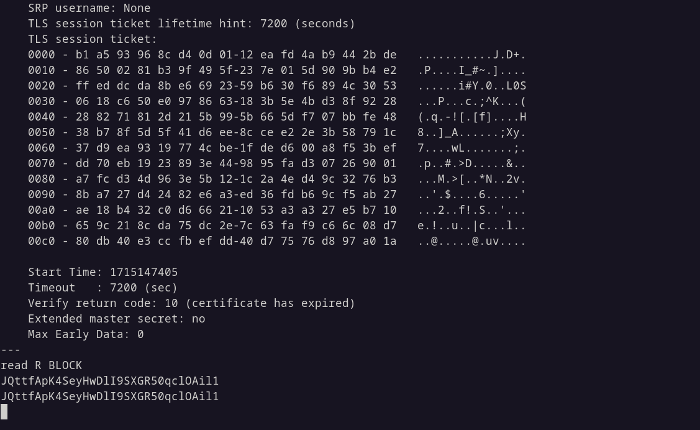
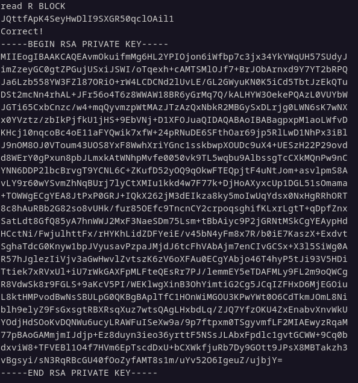

Hi everyone.
I will be going over how to solve bandit level 16 from overthewire.
This is my first writeup, and first time making a site, I know it sucks ass,
web dev is not really my thing, but gotta grasp some basics about it.
This is just a part of the course I am taking, which I really recommend for
everyone starting out in IT. Dennis if you're reading this, then you rock,
you are the teacher I wished I had when I was just starting out.
User: bandit16
Password: JQttfApK4SeyHwDlI9SXGR50qclOAil1
Level goal: The credentials for the next level can be retrieved by
submitting the password of the current level to a port on localhost in the
range 31000 to 32000. First find out which of these ports have a server
listening on them. Then find out which of those speak SSL and which don’t.
There is only 1 server that will give the next credentials, the others
will simply send back to you whatever you send to it.
Commands: ssh, nmap, openssl
First, lets SSH into the box:
$ ssh bandit.labs.overthewire.org -p 2220 -l bandit16
Now we need to see which ports are open in range 31000 to 32000,
to do that I will be using nmap which is famous port scanner.
bandit16@bandit:~$ nmap -p31000-32000 localhost -vv --snip-- Completed Connect Scan at 05:42, 0.11s elapsed (1001 total ports) Nmap scan report for localhost (127.0.0.1) Host is up, received conn-refused (0.00022s latency). Scanned at 2024-05-08 05:42:39 UTC for 0s Not shown: 862 closed ports Reason: 862 conn-refused PORT STATE SERVICE REASON 31000/tcp open unknown syn-ack 31001/tcp open unknown syn-ack 31002/tcp open unknown syn-ack 31003/tcp open unknown syn-ack 31004/tcp open unknown syn-ack 31005/tcp open unknown syn-ack 31006/tcp open unknown syn-ack 31007/tcp open unknown syn-ack 31008/tcp open unknown syn-ack 31009/tcp open unknown syn-ack 31010/tcp open unknown syn-ack 31011/tcp open unknown syn-ack --snip--
That's a lot of ports to pick from. Some of them speak SSL but others don't.
To figure out that, I'm gonna be using nmap ssl-enum-ciphers script.
bandit16@bandit:~$ nmap -p31000-32000 localhost --script=ssl-enum-ciphers 31518/tcp open unknown | ssl-enum-ciphers: | TLSv1.2: | ciphers: | TLS_ECDHE_RSA_WITH_AES_128_CBC_SHA (secp256r1) - A | TLS_ECDHE_RSA_WITH_AES_128_CBC_SHA256 (secp256r1) - A | TLS_ECDHE_RSA_WITH_AES_128_GCM_SHA256 (secp256r1) - A | TLS_ECDHE_RSA_WITH_AES_256_CBC_SHA (secp256r1) - A | TLS_ECDHE_RSA_WITH_AES_256_CBC_SHA384 (secp256r1) - A | TLS_ECDHE_RSA_WITH_AES_256_GCM_SHA384 (secp256r1) - A | TLS_ECDHE_RSA_WITH_ARIA_128_GCM_SHA256 (secp256r1) - A | TLS_ECDHE_RSA_WITH_ARIA_256_GCM_SHA384 (secp256r1) - A | TLS_ECDHE_RSA_WITH_CAMELLIA_128_CBC_SHA256 (secp256r1) - A | TLS_ECDHE_RSA_WITH_CAMELLIA_256_CBC_SHA384 (secp256r1) - A | TLS_ECDHE_RSA_WITH_CHACHA20_POLY1305_SHA256 (secp256r1) - A | TLS_RSA_WITH_AES_128_CBC_SHA (rsa 2048) - A | TLS_RSA_WITH_AES_128_CBC_SHA256 (rsa 2048) - A | TLS_RSA_WITH_AES_128_CCM (rsa 2048) - A | TLS_RSA_WITH_AES_128_CCM_8 (rsa 2048) - A | TLS_RSA_WITH_AES_128_GCM_SHA256 (rsa 2048) - A | TLS_RSA_WITH_AES_256_CBC_SHA (rsa 2048) - A | TLS_RSA_WITH_AES_256_CBC_SHA256 (rsa 2048) - A | TLS_RSA_WITH_AES_256_CCM (rsa 2048) - A | TLS_RSA_WITH_AES_256_CCM_8 (rsa 2048) - A | TLS_RSA_WITH_AES_256_GCM_SHA384 (rsa 2048) - A | TLS_RSA_WITH_ARIA_128_GCM_SHA256 (rsa 2048) - A | TLS_RSA_WITH_ARIA_256_GCM_SHA384 (rsa 2048) - A | TLS_RSA_WITH_CAMELLIA_128_CBC_SHA (rsa 2048) - A | TLS_RSA_WITH_CAMELLIA_128_CBC_SHA256 (rsa 2048) - A | TLS_RSA_WITH_CAMELLIA_256_CBC_SHA (rsa 2048) - A | TLS_RSA_WITH_CAMELLIA_256_CBC_SHA256 (rsa 2048) - A | compressors: | NULL | cipher preference: client | warnings: | Weak certificate signature: SHA1 |_ least strength: A 31691/tcp open unknown 31790/tcp open unknown | ssl-enum-ciphers: | TLSv1.2: | ciphers: | TLS_ECDHE_RSA_WITH_AES_128_CBC_SHA (secp256r1) - A | TLS_ECDHE_RSA_WITH_AES_128_CBC_SHA256 (secp256r1) - A | TLS_ECDHE_RSA_WITH_AES_128_GCM_SHA256 (secp256r1) - A --snip--
On ports that do speak SSL, there's a lot more output.
Those ports are: 31518 and 31790.
Let's connect to each and try sending in the password, the syntax from manpages is this:
openssl s_client -connect server:port
bandit16@bandit:~$ openssl s_client -connect localhost:31518
We can see this port is dead end, because it just returned us the same password we sent it.
Then let's try the other port:
bandit16@bandit:~$ openssl s_client -connect localhost:31790
Voila! We get a private ssh key for the next level!
I hope you learned something....
Until next time.